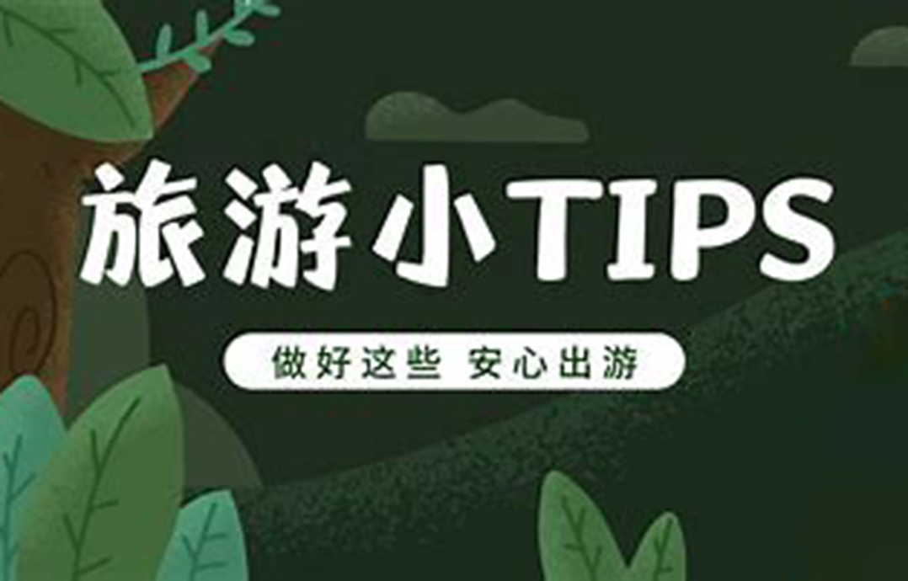

厦门旅游景点贴士
2023-06-12 来源：旅游网

1.——提前了解自己前往的目的地信息：了解自己要去的地方的天气、文化、旅游注意事项等信息，可以帮助我们更好地做好旅游计划和准备，让旅游更加顺利和愉快。
2.——做好必要的健康保健措施：有些地区可能存在的健康问题，如感染性疾病、高山病、蚊虫叮咬等，提前做好预防措施，如接种疫苗、服用药物、穿着合适的防蚊虫服装等。
3.——保持贵重物品安全：旅行时一定要保管好身份证、银行卡、现金、电子设备等贵重物品，尽量带上胸包或肩包等防盗包，并注意不要在人多的地方露出贵重物品。
4.——不要随意喝水和吃食物：为了防止因喝到未经消毒的水或摄入有毒食物而导致的食物中毒，我们要在旅游中注意对饮食的选择和方式，尽量避免在路边小摊和不卫生的食品店食用，也要时刻保持身体的卫生。
5.——合理安排行程：旅游时，我们需要根据时间和能力制定合理的旅游行程，不要过度安排行程，使其过于紧张和疲劳，也要注意安全，尽量不要在夜间路段行走。
6.—— 尊重当地文化和风俗：到访一个城市或国家，我们需要尊重当地的文化和风俗，避免做出一些不合适或冒犯当地人的行为，同时也要遵守当地的法律和规定
——厦门已成为多元文化的展示中心。 总之，旅游是一种非常开心和有意义的活动，我们应该在旅游过程中保持良好的行为习惯和安全意识，创造一个丰富多彩、安全、愉快的旅游体验。